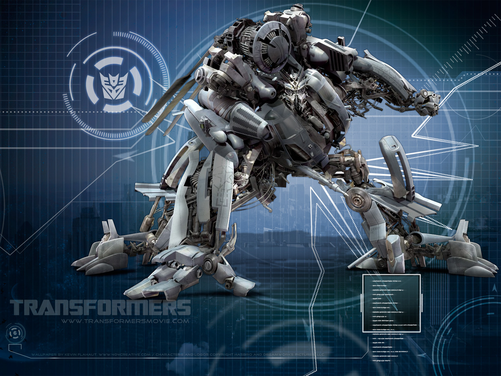

Ketua Himpunan

Satukan visi perkuat dengan misi sukses mulia
Wujudkan Progrma Kerja Unggul dan Inovatif

Bergantinya periode kepengurusan HMJ dari periode 2013/2014 ke periode 2014/2015 beganti pula program kerja yang akan dilaksanakan, program kerja tersebut akan diranacang dalam RAKER(Rapat Kerja) yang dilaksanakan pada tanggal 22-23 Mei 2015 yang diketuai oleh Afrizal Setyo W Semester 2.
Anggota Divisi Multimedia :
-
M. Aruman Hasmi
-
Nur Aini
-
Innamul Hassan
-
Ilma Nurdini Mutiara Rohmatillah
-
Itsna Syahadatud D
-
Diko Andri Vidian
-
Lutfiyah Fauziyahr
KEMBANGKAN ANIMASI ROBOT DENGAN BLENDER
Divisi multemedia berencana untuk membuat animasi 3D berupa robot transformer untuk mengikuti lomba desain animasi 3D tingkat internasional yang akan diselenggarakan di Jakarta tanggal 30 Juni 2015.
program kerja divisi multimedia
-
Menghidupkan kembali komunitas multimedia UIN MALIKI Malang
-
Membuat Mading 3D yang bertemakan tentang dunia IT
-
merencanakan project pembuatan GAME yang berbasis Islami
-
mengadakan lomba desain animasi 2D dan 3D tingkat nasional